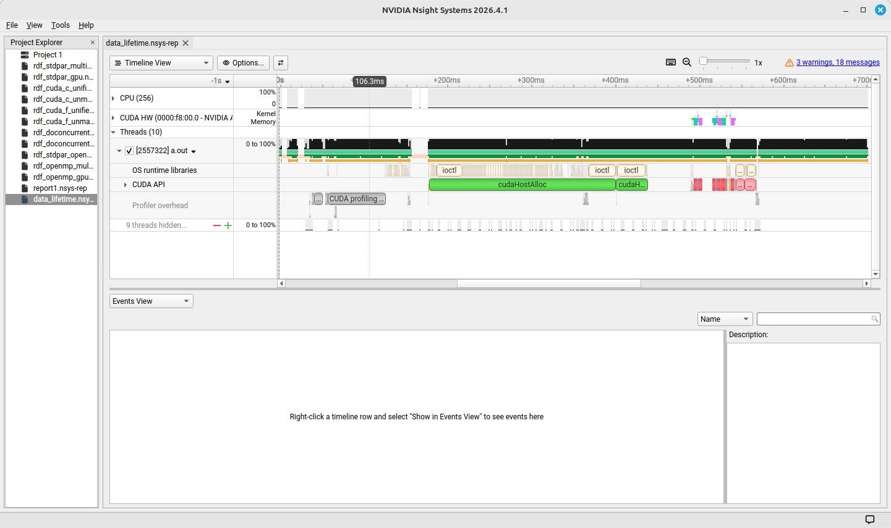
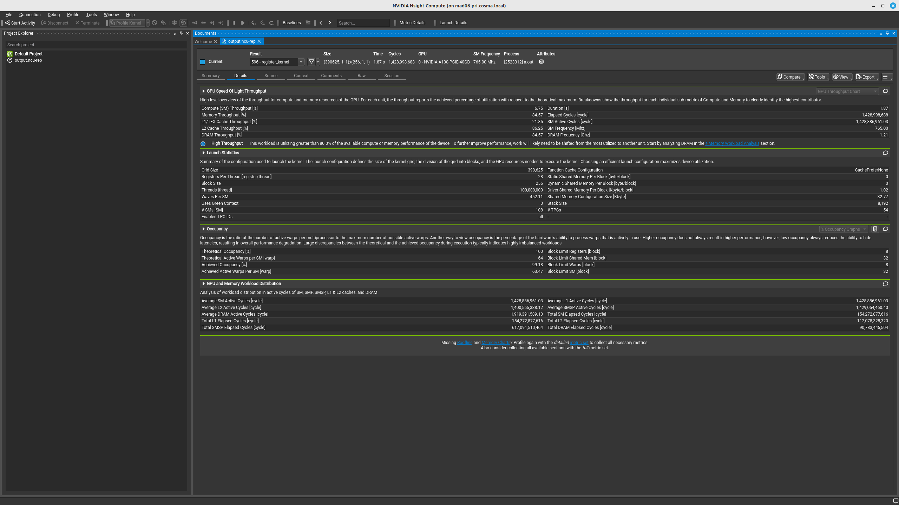
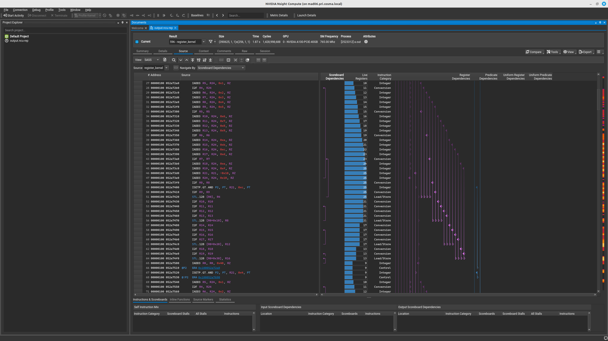
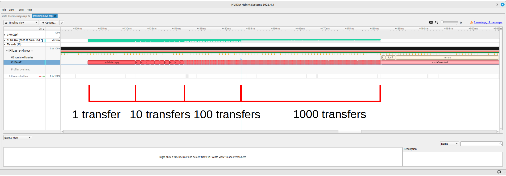
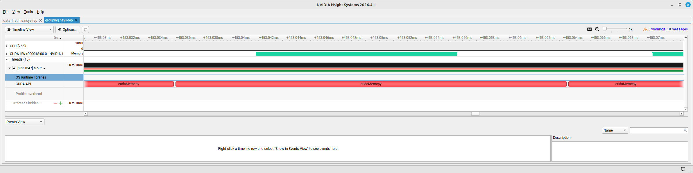
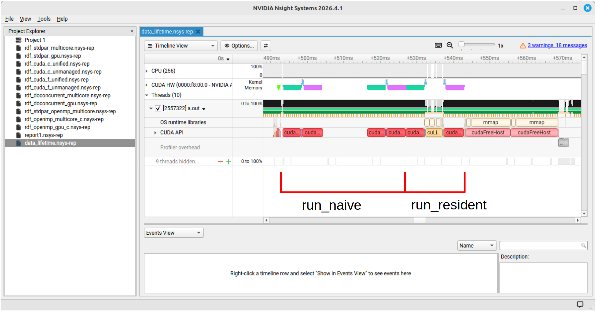

GPPT Workshop
2026-09-15
Related but distinct concepts that sometimes get used interchangeably. Both measure performance of code, but with different goals.
Profiling
Measuring performance metrics with the aim of understanding how the code works, and ultimately optimise performance.
Benchmarking
Measures the performance of existing code.
Useful for comparing code on different hardwares, or testing the scaling of our programs.
Systems
Profiles the complete operation of the program from start to finish
Highlights
Compute
Provides detailed information about the individual kernels
Highlights
Run profiler on workflow
Implement optimisations
Check profiler outputs for optimisation stratergies

Command line
nsys profile [application name]
Produces a report file that can be used for later analysis
Useful when working on a system with no x window access
In GUI
nsys-ui
Launches the Systems GUI.
Analysis can be run directly from the GUI.
[link to directory]
Run Nsights Systems on the provided code!
Tasks:
Record in the shared document the order and time taken of actions on the device.

Command line
ncu <options> [application name]
By default, provides a minimal performance analysis in the command line.
Has an SQL database behind the scenes that can be queried for complex analysis.
In GUI
ncu-ui
Launches the Compute GUI.
Analysis can be run directly from the GUI.
Provides detailed metrics simply.
Use Nsight Compute on the same code.
-k here filters the output to only show the desired kernels.
Make sure the command runs, and take a look at the output. Write down the kernel’s execution time in the shared document.
Important concepts you should have seen:
Additional information available in the GUI:
Note:The profiler offers hints on improving performance.
----------------------- ----------- ----------------
Metric Name Metric Unit Metric Value
----------------------- ----------- ----------------
DRAM Frequency Ghz 1.21
SM Frequency Mhz 765.00
Elapsed Cycles cycle 1,428,679,972
Memory Throughput % 84.59
DRAM Throughput % 84.59
Duration s 1.87
L1/TEX Cache Throughput % 21.85
L2 Cache Throughput % 86.27
SM Active Cycles cycle 1,428,575,871.03
Compute (SM) Throughput % 6.75
----------------------- ----------- ----------------Memory and compute usage of the resource as a ratio against the maximum possible of the hardware
Section: Launch Statistics
-------------------------------- --------------- ---------------
Metric Name Metric Unit Metric Value
-------------------------------- --------------- ---------------
Block Size 256
Function Cache Configuration CachePreferNone
Grid Size 16,384
Registers Per Thread register/thread 16
Shared Memory Configuration Size Kbyte 32.77
Driver Shared Memory Per Block Kbyte/block 1.02
Dynamic Shared Memory Per Block byte/block 0
Static Shared Memory Per Block byte/block 0
# SMs SM 108
Stack Size 1,024
Threads thread 4,194,304
# TPCs 54
Enabled TPC IDs all
Uses Green Context 0
Waves Per SM 18.96
-------------------------------- --------------- --------------- Section: Launch Statistics
-------------------------------- --------------- ---------------
Metric Name Metric Unit Metric Value
-------------------------------- --------------- ---------------
Block Size 256
Function Cache Configuration CachePreferNone
Grid Size 16,384
Registers Per Thread register/thread 16
Shared Memory Configuration Size Kbyte 32.77
Driver Shared Memory Per Block Kbyte/block 1.02
Dynamic Shared Memory Per Block byte/block 0
Static Shared Memory Per Block byte/block 0
# SMs SM 108
Stack Size 1,024
Threads thread 4,194,304
# TPCs 54
Enabled TPC IDs all
Uses Green Context 0
Waves Per SM 18.96
-------------------------------- --------------- ---------------Grid dimensions (as defined by the launch parameters)
Section: Launch Statistics
-------------------------------- --------------- ---------------
Metric Name Metric Unit Metric Value
-------------------------------- --------------- ---------------
Block Size 256
Function Cache Configuration CachePreferNone
Grid Size 16,384
Registers Per Thread register/thread 16
Shared Memory Configuration Size Kbyte 32.77
Driver Shared Memory Per Block Kbyte/block 1.02
Dynamic Shared Memory Per Block byte/block 0
Static Shared Memory Per Block byte/block 0
# SMs SM 108
Stack Size 1,024
Threads thread 4,194,304
# TPCs 54
Enabled TPC IDs all
Uses Green Context 0
Waves Per SM 18.96
-------------------------------- --------------- ---------------Number of registers that each thread uses (counted during kernel running)
Section: Launch Statistics
-------------------------------- --------------- ---------------
Metric Name Metric Unit Metric Value
-------------------------------- --------------- ---------------
Block Size 256
Function Cache Configuration CachePreferNone
Grid Size 16,384
Registers Per Thread register/thread 16
Shared Memory Configuration Size Kbyte 32.77
Driver Shared Memory Per Block Kbyte/block 1.02
Dynamic Shared Memory Per Block byte/block 0
Static Shared Memory Per Block byte/block 0
# SMs SM 108
Stack Size 1,024
Threads thread 4,194,304
# TPCs 54
Enabled TPC IDs all
Uses Green Context 0
Waves Per SM 18.96
-------------------------------- --------------- ---------------Shared memory. From launch parameters and measured in use.
The ratio of active warps to the theoretical maximum possible on the hardware.
Section: Occupancy
------------------------------- ----------- ------------
Metric Name Metric Unit Metric Value
------------------------------- ----------- ------------
Block Limit SM block 32
Block Limit Registers block 16
Block Limit Shared Mem block 32
Block Limit Warps block 8
Theoretical Active Warps per SM warp 64
Theoretical Occupancy % 100
Achieved Occupancy % 64.83
Achieved Active Warps Per SM warp 41.49
------------------------------- ----------- ------------The ratio of active warps to the theoretical maximum possible on the hardware.
Section: Occupancy
------------------------------- ----------- ------------
Metric Name Metric Unit Metric Value
------------------------------- ----------- ------------
Block Limit SM block 32
Block Limit Registers block 16
Block Limit Shared Mem block 32
Block Limit Warps block 8
Theoretical Active Warps per SM warp 64
Theoretical Occupancy % 100
Achieved Occupancy % 64.83
Achieved Active Warps Per SM warp 41.49
------------------------------- ----------- ------------Theoretical = maxmimum possible given the properties of the kernel Achieved = Real occupancy (given thread overheads etc.)
The ratio of active warps to the theoretical maximum possible on the hardware.
Section: Occupancy
------------------------------- ----------- ------------
Metric Name Metric Unit Metric Value
------------------------------- ----------- ------------
Block Limit SM block 32
Block Limit Registers block 16
Block Limit Shared Mem block 32
Block Limit Warps block 8
Theoretical Active Warps per SM warp 64
Theoretical Occupancy % 100
Achieved Occupancy % 64.83
Achieved Active Warps Per SM warp 41.49
------------------------------- ----------- ------------Fixed hardware cap on the number of blocks an SM can hold
The ratio of active warps to the theoretical maximum possible on the hardware.
Section: Occupancy
------------------------------- ----------- ------------
Metric Name Metric Unit Metric Value
------------------------------- ----------- ------------
Block Limit SM block 32
Block Limit Registers block 16
Block Limit Shared Mem block 32
Block Limit Warps block 8
Theoretical Active Warps per SM warp 64
Theoretical Occupancy % 100
Achieved Occupancy % 64.83
Achieved Active Warps Per SM warp 41.49
------------------------------- ----------- ------------The SM’s register file divided by the registers each block needs.
The ratio of active warps to the theoretical maximum possible on the hardware.
Section: Occupancy
------------------------------- ----------- ------------
Metric Name Metric Unit Metric Value
------------------------------- ----------- ------------
Block Limit SM block 32
Block Limit Registers block 16
Block Limit Shared Mem block 32
Block Limit Warps block 8
Theoretical Active Warps per SM warp 64
Theoretical Occupancy % 100
Achieved Occupancy % 64.83
Achieved Active Warps Per SM warp 41.49
------------------------------- ----------- ------------The SM’s shared memory divided by the amount each block requests.
The ratio of active warps to the theoretical maximum possible on the hardware.
Section: Occupancy
------------------------------- ----------- ------------
Metric Name Metric Unit Metric Value
------------------------------- ----------- ------------
Block Limit SM block 32
Block Limit Registers block 16
Block Limit Shared Mem block 32
Block Limit Warps block 8
Theoretical Active Warps per SM warp 64
Theoretical Occupancy % 100
Achieved Occupancy % 64.83
Achieved Active Warps Per SM warp 41.49
------------------------------- ----------- ------------The SM’s maximum number of warps divided by the warps per block.
Higher occupancy is not always higher performance!
Some lower occupancy scenarios that run more efficiently:
Section: GPU and Memory Workload Distribution
-------------------------- ----------- ------------
Metric Name Metric Unit Metric Value
-------------------------- ----------- ------------
Average DRAM Active Cycles cycle 13,501.20
Total DRAM Elapsed Cycles cycle 39,540,736
Average L1 Active Cycles cycle 618,614.50
Total L1 Elapsed Cycles cycle 67,216,096
Average L2 Active Cycles cycle 194,794
Total L2 Elapsed Cycles cycle 48,816,560
Average SM Active Cycles cycle 618,614.50
Total SM Elapsed Cycles cycle 67,216,096
Average SMSP Active Cycles cycle 618,525.90
Total SMSP Elapsed Cycles cycle 268,864,384
-------------------------- ----------- ------------Displays the number of memory cycles for the kernel.
We won’t be using this information in the workshop.
Reminder of the factors that impact occupancy:
We will now go through a set of exercises that demonstrate these factors.
1) Grid and block size
launch_param_size directory - where you already are!2) Register use per thread
registers directory3) Shared memory per block
shared_memory directoryThe code for all exercises vary a single parameter that controls the amount of the resource the kernels use - check the README.md in each directory for more information!
Make a note of the parameters you test, and how they impact the runtime and occupancy.
On an A100, which has a maximum of 32 blocks per streaming multiprocessor, changing the block sizes of the example gives the following occupancies:
| Threads/block | Warps/block | Expected occupancy | What it shows |
|---|---|---|---|
| 32 | 1 | ~50% | capped by the 32-blocks-per-SM limit, not warps — small blocks hurt |
| 64 | 2 | ~100% | just enough warps per block to fill the 64 slots |
| 128 | 4 | ~100% | fewer, larger blocks, still 64 warps |
| 256 | 8 | ~100% | conventional full-occupancy case |
| 768 | 24 | ~75% | 64 is not divisible by 24, so only 2 blocks fit and 16 warp slots stay idle |
| 1024 | 32 | ~100% | 2 blocks of 32 warps fill all 64 slots |
You should find that increasing N in the program decreases occupancy.
N |
Register/thread | Duration (ms) | Occupancy (%) |
|---|---|---|---|
| 2 | 16 | 159 | 100 |
| 8 | 44 | 290 | 62 |
| 50 | 206 | 321 | 12.5 |
Higher use of shared memory causes lower occupancy.
| SHARED_STRIDES | Memory size per block | Blocks/SM | A100 Occupancy |
|---|---|---|---|
| 96 | 49kB | 3 | 18.75% |
| 64 | 32kB | 4 | 25% |
| 32 | 16kB | 9 | 56.25% |
| 24 | 12kB | 12 | 75% |
| 20 | 10kB | 14 | 87.5% |
| 18 | 9kB | 16 | 100% |

Compute offers a detailed view of the instructions run in a kernel and the resourse use at each step.
NOTE! This is outside the scope of this workshop, and is being presented for completion!
Interactive examples of some key concepts in performant GPU code.
The concepts we will be investigating:
Warps work most efficiently when each thread accesses sequential (‘coalesced’) memory.
To demonstrate this, we will profile the program in the indexing directory.
The program contains two kernels that perform the same summation operation on a 256 x 2^20 data structure, but with different memory access patterns:
row_sum_strided accesses its rows contiguously, in the manner that would be optimised for CPU.row_sum_coalesced uses a transposed indexing so that adjacent threads are accessing memory 1 float apart.| Kernel | duration (us) |
|---|---|
row_sum_strided |
3280 |
row_sum_coalesced |
764 |
The coalesced accesses are substantially faster.
Takeaways:
When threads in a warp take different branches in a kernel, the GPU runs both branches on every thread. A lot of branching in kernels can therefore hurt our performance.
Let’s look at a practical example, in the branching directory, which demonstrates this impact of branching on kernel run-time.
branching_kernel choses a branch based on its ID and an input parameter| Coherence_parameter | Runtime (us) |
|---|---|
| 1 (divergent warps) | 813 |
| 16 | 813 |
| 32 (coherent warps) | 418 |
You have probably heard that data transfers between host and device are very costly to the performance of your code.
Now that you’re well-practiced in using a profiler, you can prove this for yourself!
There are two demonstrations of how data transfers can impact performance to explore:
1) Grouping transfers
grouping_transfers directory.2) Avoiding additional transfers
data_lifetime directory.Making one large transfer is more efficient than making many, smaller transfers.


Using the sqlite functionality of Systems we can produce a table that calculates the transfer overheads:
| bytes | calls | api (ns) | gpu (ns) | overhead (ns) |
|---|---|---|---|---|
| 128000 | 1000 | 27835646 | 13919100 | 13916546 |
| 1280000 | 100 | 11496019 | 10038196 | 1457823 |
| 12800000 | 10 | 9811789 | 9649268 | 162521 |
| 128000000 | 1 | 9663991 | 9612501 | 51490 |
Remember! - The same overheads will also happen when launching kernels. - Launching many small transfers (or kernels!) in a loop is a very good way to run into large overheads, slowing down your code!
Because data transfers are very time-expensive, it is good practice to leave memory on the GPU for as long as possible.
Sometimes, this means creating kernels for code that could be better optimised on CPU but is part of the way through a GPU workflow. The inefficient calculations on GPU might still be faster than a transfer to and from the host!
Consider the program in the data_lifetime directory.
The workflow of the program is:
Two versions of this workflow are presented:
run_naive, which transfers the data back to the CPU for the normalisation calculations,run_resident, which uses a device kernel for the normalisation.Run Nsight Systems on this program to see how the two versions perform.

** CUDA GPU Kernel Summary (cuda_gpu_kern_sum):
Time (%) Total Time (ns) Instances Avg (ns) Med (ns) Min (ns) Max (ns) StdDev (ns) Name
-------- --------------- --------- --------- --------- -------- -------- ----------- ------------------------------------
95.6 2,000,548 8 250,068.5 249,601.0 227,873 271,585 21,636.6 void regular_fft_factor<...> (cuFFT)
4.4 92,896 1 92,896.0 92,896.0 92,896 92,896 0.0 normalise(double2 *, double, int) ** CUDA GPU MemOps Summary (by Time) (cuda_gpu_mem_time_sum):
Time (%) Total Time (ns) Count Avg (ns) Med (ns) Min (ns) Max (ns) StdDev (ns) Operation
-------- --------------- ----- ----------- ----------- --------- --------- ----------- ----------------------------
58.2 21,262,050 6 3,543,675.0 3,674,118.0 1,824 8,871,150 3,448,662.2 [CUDA memcpy Host-to-Device]
41.8 15,252,761 3 5,084,253.7 5,084,104.0 5,083,945 5,084,712 404.8 [CUDA memcpy Device-to-Host]Sometimes it is better to leave data resident on the GPU than to move it back to the CPU, where calculations might naively be more efficient.
Putting everything we’ve learnt together about data transfers:
You should now have plenty of practical experience using both the Nsight Systems and Nsight Compute profilers! They are valuable tools for optimising GPU codes, and should be used as part of your regular workflow when trying to extract performance from your programs.
REMEMBER!